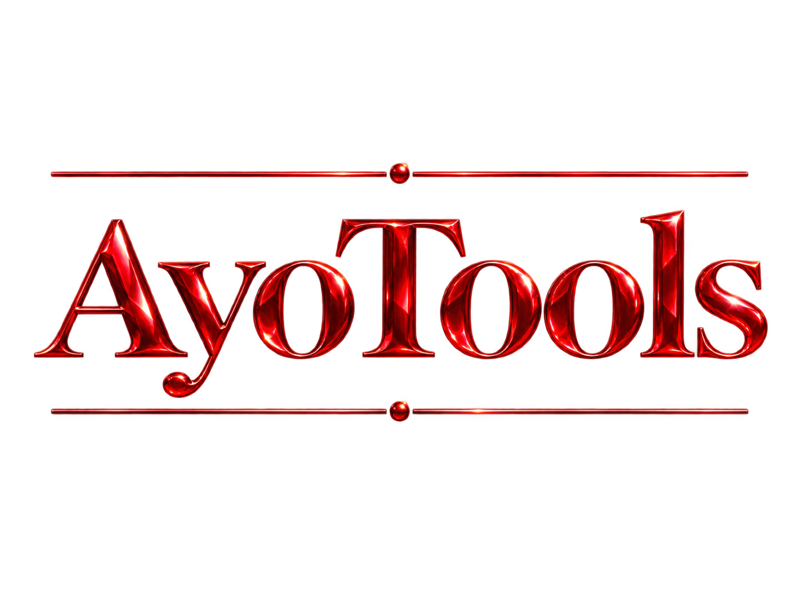
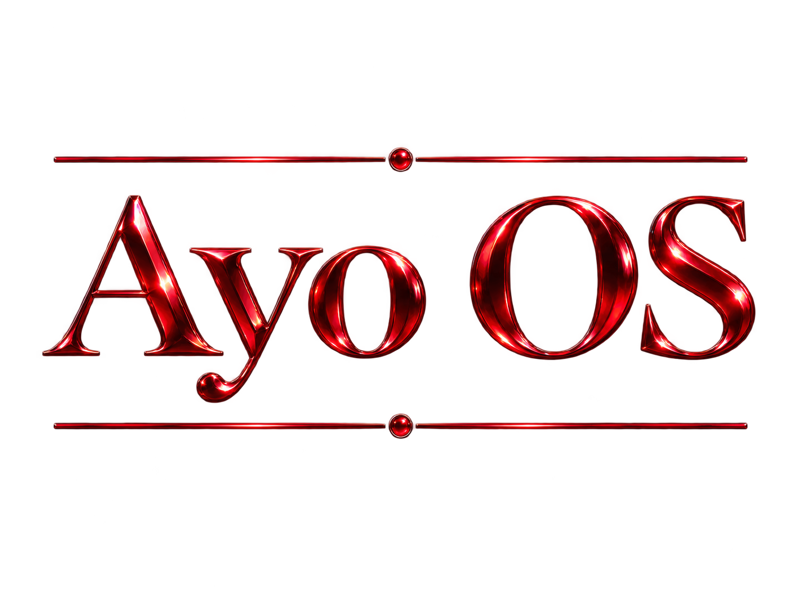
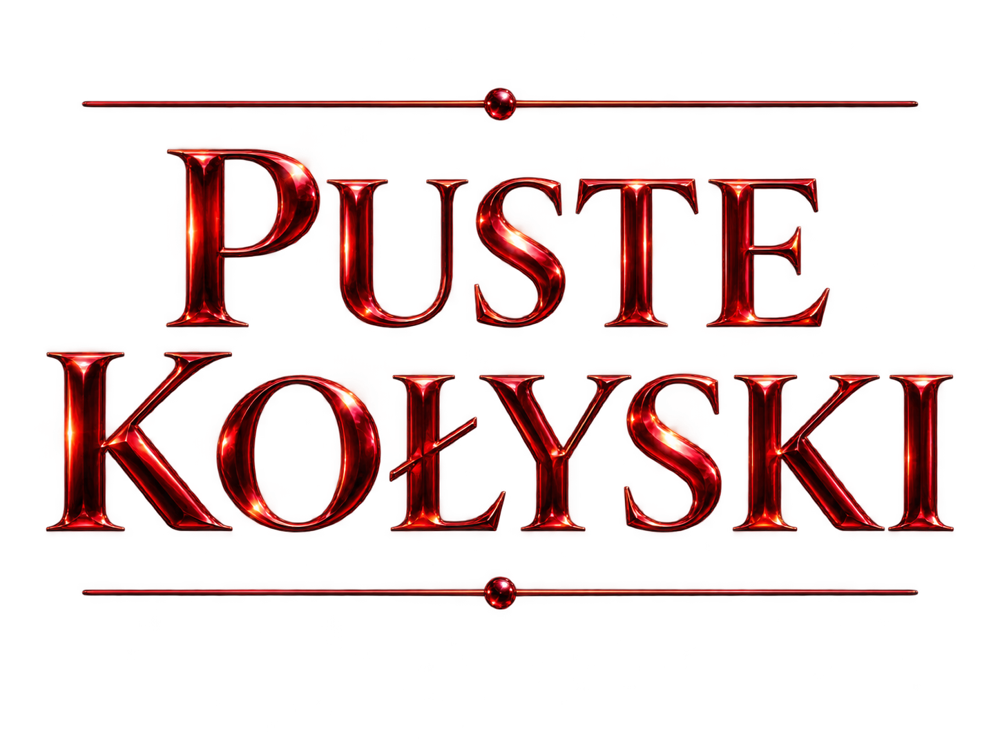

Aplikacje i narzędzia Wejdź 02
Autorski system operacyjny Wkrótce 03
Opowieść i osobny świat WkrótceAYO WORLDS
Wybierz portal i przejdź do jednego ze światów Ayo.

Aplikacje i narzędzia Wejdź 02
Autorski system operacyjny Wkrótce 03
Opowieść i osobny świat Wkrótce